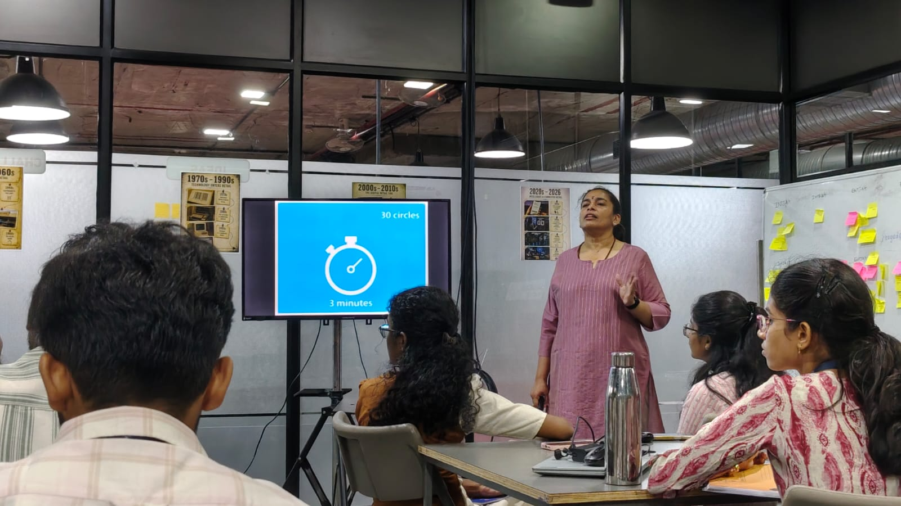

Cracking the Instagram Algorithm & Mastering Design Thinking
The day kicked off with an eye-opening Tech Talk dissecting the engineering and mathematical principles powering Instagram’s Algorithm. The speaker broke down how modern recommendation pipelines categorize feeds and Reels: tracking subtle behavioral signals such as repeat loop counts, dwell time, watch completion percentage, and inversely, the micro-skips and instant swipes that penalize content visibility.
Interactive Activity: Two Truths and One Lie
To put algorithmic curation into perspective, each team analyzed their personal feed patterns and challenged teammates to guess two truths and one lie about their daily feed recommendations. It demonstrated how algorithms construct deep behavioral personas from our unspoken digital micro-habits.
“A problem cannot be solved with the same mindset with which the problem was created.”
We transitioned into an intensive, perceptive session on Design Thinking — learning that it is not merely a corporate buzzword, but an iterative, non-linear methodology grounded in empathy and rigorous testing.
Empathize
Listen to human pain points deeply
Define
Frame the core problem clearly
Ideate
Divergent, wild brainstorming
Prototype
Build tangible, low-cost representations
Test
Validate with users & iterate back
Do people actually want this? Does it solve real human friction?
Can we practically build it using current technology and engineering?
Is the business model sustainable? Can it generate long-term value?
The session emphasized that innovation requires dynamic shifting between divergent thinking (opening wide to explore multiple creative possibilities) and convergent thinking (synthesizing and selecting the most viable answer).
To shock us out of conventional thinking, we were given a sheet with 30 blank circles and exactly 3 minutes on the clock to turn as many circles as possible into unique objects without any digital tools. Under strict time pressure, self-censorship vanished, forcing our brains to think outside the box and unleash raw creativity.
